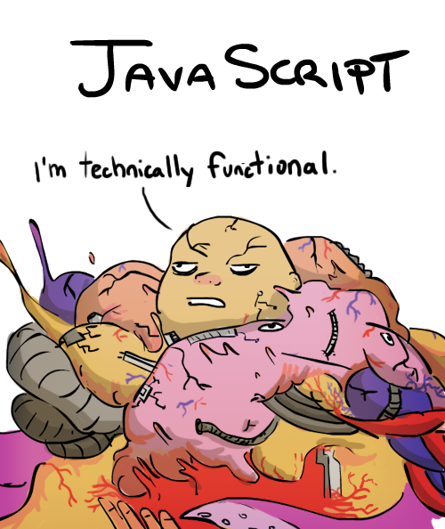
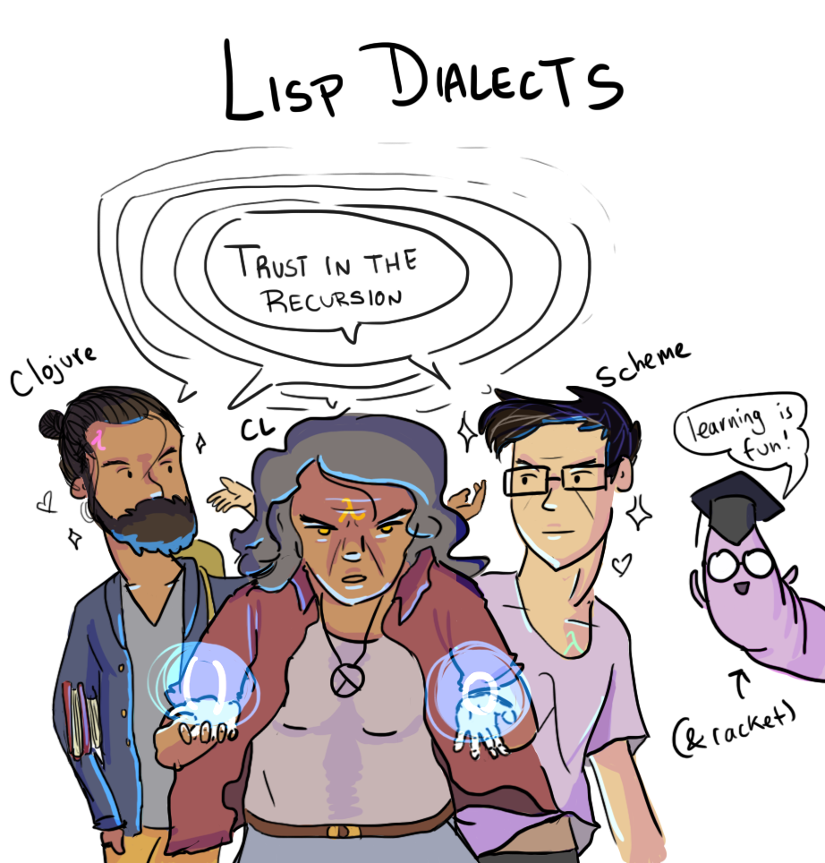
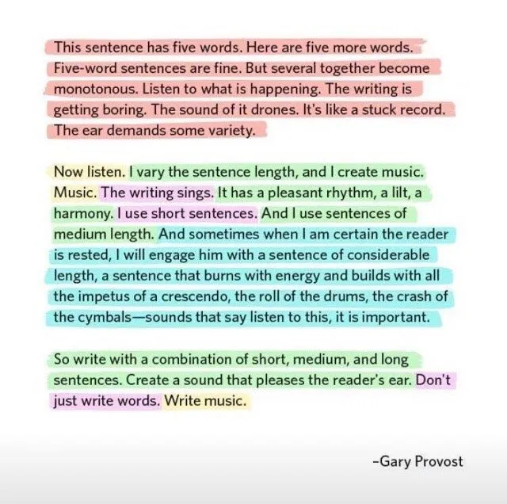

Zine#42
写 Zine 的好处
🎶 爱的对白 - 椅子乐队 The Chairs
Hi，这是 Zine 的第 42 期，隔了好久才终于发出来了。
隔了这么久，是因为积攒了很多没看的内容，我想看完了再发，不然 Zine 会有点单薄；在这个期间我也在折腾博客、写了一些别的内容，所以也没太多时间来写 Zine。
我觉得如果写周刊，保持周更是蛮重要的。保持更新频率，容易让人发现你、熟悉你，或许还有个人在每周固定的时候等着你。周更也很有压力，如果断更了，可能会辜负读者的期待。我在 Zine#38 已经提前叠甲了，所以我就放心大胆地鸽了很久。
へ(゜∇、°)へ
说实话，我很佩服周更的作者，尤其是周刊内容量大的（例如 科技爱好者周刊），这其中的工作量在我看来是不小的。我也希望我能保持更新频率，但目前对我而言并不容易。
尽管如此，我觉得 Zine 还是给我带来了好处。
Zine 在很大程度促进了我更新博客内容。从写第一篇 Zine 到现在，我总共写了 86 篇内容，而在那之前，我只写了 25 篇。 Zine 大多数的工作是整理信息，不需要写太多自己的话，所以写起来会相对轻松；而当你分享的内容收到一些好的反馈，又会进一步鼓励你继续写；整理信息过程中会接触到很多东西，拓宽视野的同时，也很可能孕育一些想法，催生出一篇文章。
Zine 也是我的一份笔记。自己整理过的信息多少会有些印象，在需要时快速检索一下，往往能找到一些有用的东西。例如前阵子我在折腾首页的样式，就找到了 Zine#14::Responsive TOC leader lines with CSS，用里面的方法实现了引导线的样式。
如果你不知道写什么，不妨写写周刊。记录生活也好，分享信息也好，开始了，或许就会给你带来动力。
这期内容比较多，泡杯咖啡，听听推荐的歌，慢慢看啦～
不定期再会 ｡:.ﾟヽ(*´∀`)ﾉﾟ.:｡
News | Article
Evaluating Resources and Misinformation | Kaitlyn Van Kampen
文章分享了 SIFT 方法，用于分辨虚假信息，在你想分享一些信息之前，你应该先判断可信度。
S - Stop
在阅读或者分享前，先停下来，应用其它三个方法，验证其可信度。
请注意您对文章标题或信息的情绪反应。标题通常旨在吸引点击，并通过引起读者强烈的情绪反应来实现这一目的。
I - Investigate the Source
花点时间了解一下作者的背景和信息的来源。
可以利用 横向阅读 (Reading Laterally) 的技巧和 hovering。
不要只看网站上的「关于我们」部分，还要看看其他可信来源对该来源的评价。
你可以使用 Google 或 Wikipedia 来调查该来源。
F - Find Better Coverage
还是利用横向阅读的技巧，寻找更多的相关信息、报道，做进一步的佐证，看看你是否能找到其他来源来证实相同的信息或对其提出异议。
必要时借助事实核查机构（Fact Checker），例如 FactCheck.org。
T - Trace Claims, Quotes, and Media to their Original Context
追溯主张、引文和媒体的原始语境。如果存在引用，应该去看看引用的原文，看看有没有曲解、夸大或者断章取义。
这点我有体会，我常看 科技爱好者周刊，其中有一个部分是「言论」，我以为是直接引用的，但其实是经过了作者加工的，有时会比原文更具吸引力，但可能和原文表达的含义会有些出入。
所以后面我一般都会去看看原文链接。
我在 Zine 中分享的内容也是，或多或少会和原文表达的含义有差异，对于感兴趣的内容，我建议你也翻翻原文。
How to Surf the Web in 2025, and Why You Should | raptitude.com
作者推荐你进行「网上冲浪」⸺ 以一个网站作为起点，通过超链接不断探索，发现自己感兴趣的东西。
作者还分享了 3 条网上冲浪规则：
- 从一个有大量外部链接的独立网站开始 (Zine 就是一个很好的起点 :P )
避免打开多个浏览器标签页
过去，网页浏览器没有标签页。你必须下定决心，直接跳到下一个地方。如果你不喜欢，随时可以返回，但你确实需要离开当前页面才能看到另一个。这是刺激的一部分，它让你的思维能够完全从一个空间的思想切换到另一个空间，而不是将注意力分散到越来越多的网站上，却无法完全投入到任何一个网站中。
- 当你进入一个封闭系统时，请离开
摘录
我说的「网上冲浪」不只是指上网。我的意思是，仅仅通过点击超链接，从一个页面跳到另一个页面来探索互联网，没有明确的目的地，除了那个奇妙的、尚未被发现的网站，当你找到它时，它会让你惊叹不已，让你着迷，那个网站会让你觉得它一直在等你，你永远也看不够。
要冲浪，你必须从一个带有外部链接的普通网站开始，避开所有算法驱动的通道 (Reddit, YouTube, X, 任何应用程序)，这些通道引导着当今大部分的互联网流量。你还必须使用一台真正的电脑，而不是手机。如果你最终进入了社交媒体，那你就不是在冲浪了。
年轻的读者可能甚至不知道，互联网曾经完全由网站组成，由人类创建，仅通过超链接连接。超链接充当路标，由其他人手工放置，旨在引导同行者前往他们原本不会知道的独特地点。没有公司拥有的通道，只有许多从每个空地分叉出来的路径，这些路径由这些手工制作的标志标记，召唤你继续前往荒野中的某个其他地方。
20 世纪 90 年代末到 21 世纪初的互联网，与今天的互联网相比，提供了截然不同的感官和情感体验。稍微换个比喻，旧时的网络就像一个由无数相连、装饰各异的公寓组成的无尽城市，人们通过墙壁上的小滑道和传送门穿梭其中。每一个传送门都将你直接送往另一个古怪的空间，由另一个古怪的人物建造，每个空间又都有自己的一系列滑道向外辐射。
在这种结构中冲浪，其特点是充满了惊奇和丰富感。下一个传送门后面可能就是你从未见过的事物。你穿梭于宇宙之中，发现着你甚至不知道存在的事物，⸺ 而宇宙也随之不断扩张。
I Tried Every Todo App and Ended Up With a .txt File | Alireza Bashiri
作者尝试过很多 TODO 应用，最后还是一个 txt 文件最有效，因为它足够简单方便、数据是通用的、且数据属于自己。
我曾经也用 GTD (Getting Things Done) 管理自己的各种事项，但有段时间没有及时 review，到现在就用得很少了。
当我有什么怕忘的，我一般就打开手机的记事本，简单记录一下，后面再整理。
Re-label the "Save" button to be "Publish"… | Simon Willison’s Weblog
维基百科将「保存(Save)」按钮的文案改了「发布(Publish)」，因为他们发现用户不一定理解「保存」意味着什么，每次「保存」其实都会发布改动，并且不可撤销，但用户可能会以为只是存了一次草稿。
重新标记按钮并不能解决所有问题，但它会更清晰、更明显地向用户表明他们即将执行的操作的性质。
这说明了合适的文案对可用性的影响，在选择文案时要多加斟酌。
另外一个类似的例子是：“Your” vs “My” in user interfaces | Adam Silver。
The evolution of five of Adobe’s iconic icons | Adobe Design
文章分享了 Abobe 5 个常用图标的演变，虽然只是一个很小的图标，但也有很多讲究的地方。
摘录
图标可能很小，但其影响力却巨大。它们将意义、记忆和隐喻浓缩在几个像素之中。随着我们的工具、用户和平台不断发展，引导它们的图标也在不断演变。这五个图标向我们展示了设计绝非一成不变。它是一个活生生的过程，包括倾听、测试、完善，有时还会回归到一直以来行之有效的方法。
[…]
每个图标背后都有一支设计师团队，他们回答着能开启理解之门的问题：这行得通吗？它清晰吗？它是否尊重用户？它是否面向未来？这些问题背后是对让工具变得直观、包容和神奇的承诺。所以，下次当你点击一个图标时，花点时间欣赏一下这个能说明一切的小图像吧。
Do Nothing | prickly oxheart
作者建议尝试一下「无所事事」，即什么也不做，就只是感受当下。
就是正念吧，专注于此时此刻，专注于正在做的事情。
如果你对正念感兴趣，推荐看看《十分钟冥想》。
走路就只是走路，不听歌也不想什么；吃饭就是吃饭，去观察食物的形状，感受食物的带来的触觉，它们的香味和味道。
专注于当下，就存在于当下，能够切实地感觉周围的一切，而不是身在此处，却不在此处。
现在的生活太忙了，充斥着各种信息，有各种想要的东西、想做的事情，却很少停下来，什么都不做。
试试给自己一段空白的时间。
The Conversation of a Kiss | Sightless Scribbles
一篇关于吻的优美的文章。
Become the person that you would like to be around | postcards by hasif
成为那个你想与之相处的人。
摘录
因为想想你最爱的人。
那些像阳光一样温暖的人。
那些让你感到放松的人。
他们可能没做什么大事，对吧？
他们只是始终如一地出现。温柔地。不带任何表演。
他们没有试图去改变你。
当你沉默时，他们没有表现出奇怪。
他们没有每两分钟就看一次手机，同时假装关心。
他们看你的眼神，让你觉得自己很重要。
这不正是我们都想要的吗？
被看重。
被温柔以待。
被铭记，无需提醒。
被理解，无需解释我们声音中的每一丝颤抖。
那么，如果你成为了那样的人呢？
接手，而不是「接锅」 | So!azy
工作上可能会遇到一些人，他们对自己的要求不高，做出来有问题，上头让你来接手，此时会觉得心里不平衡，凭什么别人做不好要帮他擦屁股呢。
还有的人可能说的时候义正言辞，龙飞凤舞，而实际做事就各种推托，当你吭哧吭哧干活，看到这样的人也会心里不平衡。
有时管理层也不作为，任由这些人的存在，心里也不平衡。
归根到底是有一种不公的感觉吧。
虽然知道应该专注于自己，减少对这些人的关注，不要浪费心力在这上面，但难免会有一些合作，又总会激发出心里的不平衡。
如果跟着摆烂，就变成自己讨厌的人了，我觉得也是不可取的。
所谓「眼不见为净」，要么让这些人远离自己，但作为普通牛马可能没有这样的权力；要么自己远离，去找和自己一样的人。
「极客死亡计划」的设计哲学 | 極客死亡計劃
「極客死亡計劃」的设计蛮不错的，有很多作者的小巧思。
我也写了 我的博客设计。
你也许不知道的海盗电台 | 枫林灯语
文章分享了「海盗电台」的历史和相关技术。
「海盗电台」是指那些未经许可而建立的广播电台。
这些「海盗电台」挺浪漫的，广播一些自己喜欢的东西， 也不知道有没有人收听到，只是孤独地发射着自己的讯号。
某种程度上，个人博客也是如此吧。
Which colours dominate movie posters and why? | Stephen Follows
文章分析了电影海报的颜色使用，感兴趣可以看看。
- 橙色 - 以一种不令人担忧的方式吸引你的注意力，它散发着温暖，并增强了人的存在感。
- 红色 - 它传达着一个可以走向相反方向的双重信息 ⸺ 一方面是爱与激情，另一方面是危险与侵略。
- 白色 - 它可以是温暖而充满希望的，也可以是冰冷而孤立的，这取决于它周围的颜色。它能创造空间，消除干扰，使主题突出。
- 蓝色 - 平静、沉着。
- 棕色 - 粗粝、泥土和颗粒感。
- 绿色 - 家园或地狱。
- 紫色 - 它很少主导调色板，但一旦主导，就预示着某种非主流的存在。
- 粉色 - 高调亮相，引人注目
Read to Forget | Mo's Blog
我记得同事们会高亮大段文字，有时甚至高达 40%。这对我来说毫无意义。考虑到引人入胜的作品数量之多以及我们有限的时间，我们只能阅读一篇文章一次。所以，我阅读是为了遗忘。当我开始阅读时，我已准备好遗忘眼前 98% 的内容。对于大多数文本，我只想要两样东西：首先，我希望它能微妙地改变我的思维，这是一个渐进式的更新，使我朝着一个更完善的世界模型迈进。其次，我希望从中提取一些关键信息，以便日后写作时使用。例如，如果我遇到一篇论文中写得很好的方法论部分，我就会保存下来。阅读应该激发我的思考并产生新的想法。
不禁让我反思我自己，我阅读文章时很喜欢做摘录...
不禁让我反思我自己，我阅读文章时很喜欢做摘录。
很多时候我收藏了很多文章，记录了不少笔记，但却很少回头看，既然如此，是不是没有记的必要？
我想记录它们，是觉得或许有一天我会用上，怕错过了，怕找不到了。
有些笔记还是有价值的，例如我收藏了一些好的内容，当我想给别人分享的时候可以快速地找到，例如如何写作、写作规范、如何 Code Review……
一些我碰到的问题，花了不少时间解决，我也会记录下来，当下次碰到的时候我可以快速找到参考。我想这也是一种提高效率，节省时间的方法。尽管有的问题可以通过搜索，或者问 LLM 获取，但说不定也要花费不少时间，而把花费时间得到的解决方案记录下来，如果再次碰到就能直接拿来用，就可以省去一些折腾的时间。工作上也是类似的，有的问题会被人反反复复问，去整理也要花不少时间，如果能整理成文档，下次就可以直接丢给对方，省事很多。
最早记笔记是用有道笔记，当时需要创建文件，归类到不同目录，很多时候记录完也不会看，而且要思考怎么归类，怎么放，有些麻烦，也没那么愿意记录。
后来用 Emacs，知道了 org-roam，笔记都在一个目录下，不用管怎么分类，只需要创建，记录，方便了很多。它还支持双向链接，提供 org-roam-ui 可视化链接之间的连接关系，有段时间很喜欢往里面记笔记，创建笔记之间的连接。但是这些笔记翻看的次数其实也不多，而且很多笔记仅仅是记录一些链接、一些摘录，比较少二次加工成自己理解后的文字。唯一有点用处的，就是当我需要找某方面的内容时，我可以先搜索一遍我的笔记，看看有没有记录相关内容。这时我才会翻看一下这些笔记，或者更新这些笔记。
再后来从 org-roam 切换到了 denote，大体上和 org-roam 差不多，只是它更简洁一些，我喜欢它的设计哲学。 denote 实际更像是一个命名系统，给任意类型的文件统一的命名，然后就可以给予统一的命名做很多方便的操作。 denote 相比 org-roam 还多了标签系统，创建笔记需要输入文件名和一些 tag，我的做法就是把脑子里最容易想到的标题和 tag 写进去，这样我以后要找也会很容易回忆起来。
再看 Zine，它其实和笔记也差不多，也是各种链接和大量的摘录。我摘录的原因：
- 我觉得这段话触动我，写得优美或有点道理；
- 方便我回忆文章内容；
- 给读者参考，或许这段话也触动了他，会让他想去读一下原文。
但说实话，摘录挺花时间的，我也不会反复地看，当我摘录完后，它基本就完成它的使命了。只有在将来某天我想到它时，会回来搜索一下，这个时候或许会引用一下。
记笔记有种稍后阅读的感觉，是觉得某些内容有用，但又不想马上花时间总结、思考、内化成自己的东西，又不想错过，于是就找个地方先记录着，想着或许晚点再看。至于这个「晚点」是什么时候就不知道了。
要想让笔记系统有用，除了记录，还需要定期去整理，去关联笔记，删除没用的内容，重写成自己的语言。这是一件挺花时间的事情，或许在整理的过程中，会有一些新的发现？不过我是缺失了这一步的，我只是记录，用到的时候才会去更新。
其实我只是想回答自己一个问题：我到底还要不要记笔记，做摘录？
我想我会继续做，因为它多少还是对我有用。我想做笔记某种程度也是为了忘记，不想用脑子记住那么多信息，所以记录在一个笔记中，想得起来就翻看、更新，想不起来就积灰或者有空整理删掉。
或许是看了文章后，我对号入座了，所以想为自己辩解一下，所以长篇大论了。1作者也会做笔记，只是做得比较少；有的人标记内容，做笔记，也不一定是为了记住什么，正如《如何阅读一本书》里写的，一边读一边在书上做笔记，有助于读者理解作者想表达的内容。不过我也认同作者的一些观点，人的时间是有限的，如果总想着什么都记下来，那得多累呀，有的内容也不值得记录。「阅读是为了遗忘」，不必要求自己记住什么，阅读起来或许能轻松点。
Cool Bit
zine of millie
超酷的 zine，做得像是一个游戏，非常有趣。
17776-football
一个有趣的故事，呈现方式出来也很有趣，推荐你看看。
这让我想起 Zine#23::Browser adaptation，利用浏览器的特性来写故事，可以让故事的表达更丰富有趣。
Floor796
Floor796 is an animated scene showing the lives of characters from various works on the 796th floor of a huge space station.
Programming People
不同编程语言的拟人漫画形象。
{kind=link}

{kind=link}

50 keyboards from my collection | Aresluna
作者分享了他 50 个奇形怪状的键盘。
comicss
一个关于 CSS 的漫画网站，蛮有趣的。

90's Cursor Effects
I'd like to take the web back a little bit, into the wonderful days where knowing how to get your little mouse arrow to dance and sway was the most of your worries.
早期 web 上的指针样式，好玩，我在这期 zine 里加上了这个效果。
tooooools | Daniil Sukhovskoy
一个给图片添加效果的网站，效果挺酷的。
喜欢的设计分享
- void(0) void(0) 首页的滚动动画蛮有趣的，四个 projects 叠加在一起，变成了 misson。
- Adam Stoddard 一个设计得不错的个人博客。
Tutorial | Resource
Choosing typeface | Imperavi
一篇很棒的文章，告诉你应该如何选择字体。
主要从几个方面考虑：
- 可读性
- 使用场景
- 是否需要支持多种风格，如加粗、斜体等
- 性能
- 预算，选择开源免费字体还是付费字体
How to write a good design document | Grant Slatton
一些写好设计文档的建议。
摘录
目标
将设计文档视为数学证明。证明的目的是说服读者定理成立。设计文档的目的是说服读者在给定情况下设计是最佳的。
最需要说服的人是作者。撰写设计文档的过程有助于将模糊的直觉转化为严谨的逻辑。写作会揭示你的思考有多么草率（而代码最终会揭示你的写作有多么草率）。
组织
良好的设计文档组织与代码组织同样重要。你可能对代码组织有自己的看法。你可能用过「意大利面条代码」这个词来形容组织混乱的代码。大多数程序员在没有大量练习的情况下，写出的设计文档也像「意大利面条」一样杂乱无章。
[…]
但一份完美的文档应写得让读者毫无惊讶。读者应该觉得每一句话都自然而然地衔接前文。他们读完你的文档后会想，「这完全很简单，我们当初为什么还需要开这个会呢？」。
这让许多追求自我表现的工程师感到失望。优秀的工程师常常希望别人能意识到他们有多聪明。
但一份好的文档会以一种方式阐述问题和思维模型，使得经过数周艰苦思考才发明出的解决方案，在文档呈现时对读者来说是清晰明了的。
这也需要对阅读你文档的人的思维有一个良好的模型。你文档的目标是将他们的思维从当前状态带到一个新的状态，在那个状态中他们相信你的设计是好的。
你应该预见到每一个可能的反对意见，并预先展示为什么这些反对意见是无效的，这样读者甚至不会想到提出这些反对。
许多工程师未能准确把握读者思维的起始状态，因此未能将他们引导到目标状态。
编辑
一旦你将信息整理并正确排布好，下一步就是编辑内容长度。删除所有可以删除的词语。这样做是因为读者的注意力是稀缺资源。
除非你是一个异常简洁的写作者，否则你几乎总能在不牺牲信息的情况下，从初稿中削减大约 30% 的长度。
提高编辑能力最简单的方法是拿着红笔审阅别人的文档，划掉不必要的词语。你会发现很多。这比批评别人更容易。
一旦你锻炼出了这种能力，就可以把这把武器用在自己身上。将想法浓缩到 280 字符的推文限制内，也是一个出乎意料的好练习。
数量
大量练习是无可替代的。我很感激曾在 AWS 工作，那里有一种独特的文档写作文化。我在那里写的第一批文档非常糟糕，但写了几百篇后，我愿意相信它们已经相当不错了。
具体建议
使用短段落
你应该把你的文档看作是一系列相互关联的要点。
[…]
每个项目符号都应成为一个可以用一句话总结的段落。它不必是一句话 ⸺ 你可以在必要时详细说明。但读者一旦读完，应该能够在脑海中将其压缩成一句话。
这与编辑的理念有关，即读者的注意力是一种稀缺资源。读者在短期记忆中能处理的信息是有限的。采用「每段一个观点」的写作风格，可以让读者压缩段落内容，从而消耗更少的这种稀缺资源。
使用附录
如果文档中有某个数字是复杂计算或模拟的结果，不要将其直接写在正文中。可以使用脚注。
然后，在附录中更详细地描述该模拟。附录不应是理解文档主要结论的必要内容。它只是供好奇的读者在需要时核查你的工作。
简明写作指南 | 菠萝油与天光墟
作者整理的一些写作经验。
Hacksplaining
Security Training for Web Developers.
Game-ions.net
An ever growing collection of free game icons.
404s — gallery of error 404 page designs
Figma Design for beginners | Figma Learn
一个学习 Figma 和一些设计技巧的教程。
Learn CSS | web.dev
Learn CSS 涵盖了主要的 CSS 特性，最近 更新了一次，新增了 CSS nesting、Container queires、Anchor positioning 等相对较新的特性。
CSS 的新特性也可以看看：What You Need to Know about Modern CSS (2025 Edition) | Frontend Master
One List To Rule Them All: 100+ CSS Features for the past ~5 years. | Adam Argyle
Adam Argyle 整理了过去 5 年的 100 多个 CSS 特性，可以了解一下感兴趣的特性。
RIJKS MUSEUM
荷兰博物馆的一些藏品，主要是油画，好看。
Code Related
A Few Things About the Anchor Element’s href You Might Not Have Known | Jim's Blog
一些你可能不知道的 <a> 标签中 href 的用法。
例如, href="#" 可以回到页面顶部；href="." 和 href="" 可以刷新当前页面，不过两者刷新后的 URL 会略有差异。
An Interactive Guide to SVG Paths | Josh W Comeau
不错的 SVG Path 入门教程。
Breakpoint Columns, Five Ways. Which Do You Like? | Chris Coyier
有一个 grid layout 包含三列网格，当浏览器窗口宽度小于 500 像素时，将其改为一列网格。
文章分享了好几种实现的方式。
The Basics of Anchor Positioning | Ahmad Shadeed
介绍 Anchor Positioning 相当不错的文章。
Anchor Positioning 是个很有用的功能，这里有一个有趣的例子：Follow-the-leader pattern with CSS anchor positioning | Una。
The Fundamentals of CSS Alignment | Temani Afif
Temani Afif 整理了几种 CSS 中的对齐方法，包括 Grid Container、Flex Container、Block Container、auto margins、Absolutely-positioned elements 等。
You don't need animations | Emil Kowalski
作者整理了一些使用动画时的注意事项：
- 在开始制作动画之前，请问自己：这个动画的目的是什么？不要为了加而加。有的动画可能是为了带来愉悦感，但对于频繁操作的动作，动画可能会让人厌烦。
- 要考虑用户的使用频率，对于频率较高的操作，动画可能会让人觉得缓慢、延迟、和操作脱节。
- 一般来说动画要快，通常应该保持在 300ms 以下。（文中有个关于 tooltip 动画的例子，很细节，值得学习）
CSS-only scrollspy effect using scroll-marker-group and :target-current | Sara Soueidan
仅需要几行代码：
#table-of-contents { scroll-target-group: auto; & a:target-current { text-underline: wavy; } }
就可以在页面滚动到对应标题时，高亮导航中的对应条目，wow！CSS 太牛了。原来可需要写不少 JS 去监听才能实现。只是目前兼容性还不好，等之后浏览器大部分支持的时候我就改造一下导航。
效果可以看 CSS-only Scrollspy experiment，不过需要 Chrome 140+ 的版本。
What are OKLCH colors? | Jakub
一篇关于 OKLCH 的介绍，简洁明了，佩服作者的行文。
Volume: A 3D OKLCH Color Palette Creator 可以让你在 3D 视角下探索 OKLCH。
Making Sense of CSS Length Units | Oded Sharon
CSS 长度单位的简要总结。
You’re loading fonts wrong (and it’s crippling your performance) | Jono Alderson
一篇关于字体方方面面的文章，蛮详细的。
View Transitions: What Could Possibly Go Wrong? | Martin Trapp
文章整理了很多 View Transitions 失效的场景，前阵子 移除了博客的一些 view transtion 效果，因为这个过渡效果不太稳定，或许可以从这里面找到原因。
How to keep package.json under control | Tom MacWright
Tom MacWright 分享了一些管理 package.json 的方法和工具，避免 node_modules 过度膨胀。
其中一条蛮有启发的，就是阅读依赖的源码，你可能会发现你实际只用到依赖中的几十行代码，相比安装依赖，更好的做法是：复制该代码，并在代码注释中保留其开源许可证。
Accurate text lengths with `Intl.Segmenter` API | Sangeeth Sudheer
以前在研究 Emoji 正则匹配 时，我了解到像是 Emoji，它是有多个 UTF-16 code unit 组成的。如果执行 "🎶".length ，你得到的是 2。有的 Emoji 甚至可能是 5，11 等，取决于 Emoji 是怎么组成的。
但对于人来说，它只是 1个 Emoji，长度上应该按 1 计算。
例如，聊天对话框限制了输入长度 100，如果使用 String#length 去计算长度的话，用户输入几个 Emoji 可能就占据了很多长度，导致能够输入的内容会很少。而使用 Intl.Segmenter，可以把 Emoji 当作是一个整体的字符，按 1个 长度统计，在这种场景下或许有用。
"🎶".length; // 2 function realLength(text) { return Array.from( new Intl.Segmenter( "en", { granularity: "grapheme" } ).segment(text) ).length; } realLength("🎶") // 1
Using the Custom Highlight API | Chris Coyier
CSS Custom Highlight API 的介绍，感觉蛮有趣的 API，文档中给的例子是搜索，然后高亮文本。
Pragmatism in Programming Proverbs | gingerBill
一篇谚语风格的关于编程实用主义的文章。
摘录
- Reality is part of your problem
- The hardest thing about programming is understanding the problem you are trying to solve
- Once you go generic, you lose information about the specific
- Do not worry about the implementation of a program most of the time. If you understand the purpose, function, and usage of your problem, the implementation will usually be trivial
- You cannot become good at programming without practice, experimentation, and failure
- Do not be afraid to try to new tools, but look for tools that have proven themselves to be useful
- Most “best practices” rarely have any evidence to back up their claims, especially about being the best
- Clear is better than clever
- Be kind to your future self
- Copying is usually better than dependency
- Errors are nothing special, treat them like every other bit of code
- As a program scales in size, so do the problems
- Knowing whether or not something is useful requires skin in the game in order to get feedback
- You cannot teach virtue, you can only learn it. Look towards virtuous programmers for wisdom, and ask about their ideas on virtue.
- Bodging is doing a job out of necessity using whatever tools and materials come to hand and which, whilst not necessarily elegant, is nevertheless serviceable.
- Most people think they are being pragmatic when programming, however they are usually bodging it.
- Bodging has a huge cost to it and should be not be relied upon.
- A great many people think they are thinking when they are merely rearranging their prejudices.
- Most ideas come from previous ideas.
- Fancy algorithms are slow when N is small, and N is usually small.
The Power of 10: Rules for Developing Safety-Critical Code | Wikipedia
- 避免复杂的控制流结构，例如 goto 和递归。
- 所有循环都必须有固定的边界。这可以防止代码失控。
- 初始化后避免堆内存分配。
- 将函数限制在一页打印页面内。
- 每个函数平均至少使用两个运行时断言。
- 将数据范围限制在最小可能。
- 检查所有非 void 函数的返回值，或将其强制转换为 void 以表明返回值无用。
- 预处理器仅用于头文件和简单宏。
- 将指针的使用限制为单次解引用，并且不使用函数指针。
- 激活所有可能的警告进行编译；在软件发布之前，应解决所有警告。
Everything I know about good API design | Sean Goedecke
一些关于 API 设计的建议，我觉得作者的建议都挺中肯的。
作者的总结
- API 难以构建，因为它们缺乏灵活性，但又必须易于采用
- API 维护者的首要职责是 不要破坏用户空间。永远不要对公共 API 进行破坏性更改。
- 对 API 进行版本控制可以让你进行更改，但会带来显著的实现和采用障碍。
- 如果你的产品足够有价值，那么你的 API 设计得好不好其实并不重要，人们无论如何都会使用它。
- 如果你的产品设计得足够糟糕，那么无论你多么精心设计你的 API，它都可能很烂。
- 你的 API 应该支持简单的 API 密钥进行身份验证，因为你的许多用户不会是专业的工程师。
- 执行操作（特别是支付等高风险操作）的请求应包含某种幂等性密钥，以确保重试安全。
- 你的 API 将永远是事故的源头。确保你设置了速率限制和熔断机制。
- 对可能非常大的数据集使用基于游标的分页。
- 将开销大的字段设为可选且默认关闭，但我认为 GraphQL 有点大材小用。
- 内部 API 在某些方面有所不同（因为你的消费者群体非常不同）。
An Illustrated Guide to OAuth | DuckTyped
一篇关于 OAuth 的入门介绍。
看完之后，我明白了为什么 Everything I know about good API design 中说的，在设计 API 的时候应该提供一个使用 API Key 验证的形式。
Everything I know about good API design 的相关描述
你应该允许人们使用长期有效的 API 密钥来使用你的 API。是的，API 密钥不如各种形式的短期凭证（如 OAuth，你可能也应该支持）安全。但这不重要。你的 API 的每一次集成都始于一个简单的脚本，而使用 API 密钥是让简单脚本运行起来最简单的方式。你希望让工程师尽可能容易地开始使用。
尽管 API 的使用者（几乎可以肯定）会编写代码，但您的许多用户并非专业的工程师。他们可能是销售人员、产品经理、学生、业余爱好者等等。当您作为一家科技公司的工程师构建 API 时，很容易想象您是在为像您自己一样的其他人构建它：全职、有能力的专业软件工程师。但事实并非如此。您是在为广泛的用户群体构建它，其中许多人并不习惯编写或阅读代码。如果您的 API 要求用户执行任何困难的操作 ⸺ 例如执行 OAuth 握手 ⸺ 许多用户都会感到吃力。
使用 API Key 发起请求很简单，但是 OAuth 麻烦很多，它需要用户确认，门槛高，愿意使用的人就少。
另外，文章中有一个写作技巧值得学习，在将 OAuth 相关细节之前，作者先梳理了一遍 OAuth 相关术语。一方面，后续的行文可以用更专业的术语，也和读者达成术语的共识；另一方面，当读者去读 OAuth 文档的时候，读者就已经熟悉这些术语了。
Capitalization of Initialisms | Lawrence Kesteloot
编码的时候我也有过这样的困扰，有一些包含如 HTTP 的变量，应该怎么名呢？
例如 HTTP 方法，是 HTTPMethod、httpMethod、HttpMethod 还是 http_method 呢？
文章分析了驼峰命名的一些问题，推荐是用首字母全大写的命名方式，即 HttpMethod。
http_method 的形式其实也不错。不过在实际开发中还是看项目里的约定吧。
Address formats around the world | W3C
文章整理了全球地址的一些特点，如果需要处理地址，可以参考一下，或许能帮助考虑得更全面一些。
others
- Wasm 3.0 Completed
-
一个新兴的 JS & TS 运行时，用 rust 构建，具备零配置 TypeScript 支持、硬件加速图形、全面的 Web API。
- Apache ECharts 6 New Features
Whimsical SVG hover animation with GSAP | Josh Dillon
一个 GSAP 实现的 hover 效果，蛮有趣的。
[javascript] ❍ Braun Style Inspired Clock | Filip Zrnzevic
Filip 在 Code Pen 上实现的一个好看的钟表。
Vibe coding keyboard | Alvaro Montoro
之前还分享了一个类似的：Zine#39::AI Keys
AI related
Every Reason Why I Hate AI and You Should Too | Marcus Hutchins
作者一篇很长的文章，讲诉他为什么讨厌 AI，他认为：
- LLM 不是真正的在思考，不是通往 AGI 的路
- LLM 可能快要到达瓶颈，主要是可以用来训练的优质内容会越来越少
- LLM 会导致认知退化
对于人们可能被 LLM 取代、以及人们产生的错失恐惧症 (FOMO, Fear of missing out) 作者也有一些自己的看法。
摘录
当所有这些大型科技公司几乎每天都发布关于人工智能的惊人声明时，你就会开始被问到「那么，我们正在为人工智能做些什么准备？」正确答案当然是什么都不做。除非你有数百亿美元来构建和训练你自己的 AI 模型，否则你基本上只是某个大型科技公司昂贵订阅服务的未来客户。
对我而言，真正的推理和模式匹配之间一个明显的区别在于，当你无法获取新信息时会发生什么。
有一点我已非常清楚，那就是与 Blockchain、BigData、Cloud 和 NFT 类似， LLM 领域的大部分活动都源于恐惧。
这种恐惧本身是完全合理的。在我整个职业生涯中，从未见过如此残酷的就业市场。以前，两位数百分比的裁员通常只发生在重大经济危机或破产时。现在，这只是利润丰厚的科技公司一时兴起、似乎毫无理由地做出的举动。
[…]
这种恐惧在很大程度上因人们将大规模裁员和就业机会匮乏归咎于 AI 替代而加剧。事实并非如此，但其经济学原理极其复杂，需要另辟一文。然而，重要的是人们相信这是真的，而科技公司也乐于利用这些叙事来炒作他们的 AI 产品。
但恐惧会让人做出不理智的行为，而这正是目前推动人工智能普及的主要动力。
我发现科技领域最常见的谬误之一是「抢占先机」或「先行者优势」能带来回报。这似乎从未与现实相符。当一项新技术出现时，它充满了需要解决的缺陷。其用例不明确，技术的生存能力也不明确，这需要大量的试错。
但人们仍然相信抢占先机是有益的。我怀疑这是因为你只听说过少数几家公司因及早采用新技术而获得成功，而不是成千上万家在此过程中失败的公司。我认为，迟到比早到成功的公司要多得多。它们可以分析其他公司哪里出了错。它们可以寻找市场空白。它们可以在现有成果的基础上进行建设。在我看来，蒙着眼睛闯入雷区根本不是一个好的商业模式。但许多人似乎认为它是，至少当你称之为「人工智能」(AI, Artificial Intelligence) 时。
大型语言模型 (LLM) 本质上劫持了人类大脑的奖励系统。通过让人们快速总结和操纵他人的工作， LLM 的使用给人一种与亲力亲为完成工作相同的成就感，但却无需付出任何艰辛努力。
大脑天生就对即时满足感非常脆弱，这也是毒品成瘾机制的一部分。当成就感与完成任务相关联时，完成任务所需时间越短，多巴胺带来的快感就越频繁。模拟游戏常常利用这一点，通过再现现实世界的任务，但以一种所需努力少得多的方式来完成。
Every question you ask, every comment you make, I'll be recording you | The Register
这不仅仅是个人担忧。正如 Anthropic 最近指出的那样，大型语言模型 (LLMs, Large Language Models) 可以像公司内部人员一样被用来窃取数据。你提供给任何 AI 服务的数据越多，这些信息就越有可能被用来对付你。请记住，所有主流 AI 聊天机器人默认都会记录你的问题和对话。它们一直在这样做，目的是为了服务改进、上下文保留、产品分析，当然，也是为了喂养它们的 LLMs。
很多大公司巴不得获取你所有的隐私，方便给你定制广告，LLM 同样也是这些大公司的产品，尽管现在没有在对话中插入广告，但谁知道你告诉 LLM 的许多个人信息会不会被用来做什么呢？而且这些信息你甚至无法删除。
我们不想被各种软件窃取隐私，但面对 LLM，很多人却愿意把自己的各种细节告诉 LLM，万一以后这些个人细节被用来针对你呢？
在和 LLM 对话的时候，要提醒自己，一方面你的对话内容会被保留，即使你删除了，也只是你以为删除了而已；另一方面是，依旧应该注重自己的隐私。
类似观点的文章：AI surveillance should be banned while there is still time. | Cabriel Weinberg
虽然聊天机器人对话类似于较长的搜索查询，但聊天机器人对隐私的危害可能要严重得多，因为其推断潜力大大增加。更长的输入会促使人们提供更多个人信息，人们也开始向聊天机器人倾诉心声。对话形式会让人感觉像是在和朋友、专业人士，甚至是治疗师交谈。搜索查询会揭示兴趣和个人问题，而人工智能对话则将这些信息的具体性提升到另一个层次，此外还会揭示思维过程和沟通方式，从而更全面地描绘你的个性。
这种更丰富的个人信息可以被更彻底地利用来进行商业和意识形态上的操纵， […]它们可以通过聊天机器人记忆功能，根据你过去的对话进行训练和微调，从而更显著地适应你特定的说服触发点，使影响力更加微妙。你不会再看到烦人且显眼的广告无处不在地跟着你，而是会看到一个看似令人信服的论点，根据你的个人风格量身定制，其中包含一个你不太可能去核实的不当来源的「事实」，或者一个你很可能会听从的微妙产品推荐。
How Can AI ID a Cat? An Illustrated Guide. | Quanta Magazine
一篇关于神经网络是如何工作的科普性文章，通俗易懂。
神经网络似乎就是在回答一个 yes or no 问题，它通过构建很多个维度进行判断，维度越多越能逼近 yes or no 的分界线。
The personhood trap: How AI fakes human personality | Ars Technica
LLMs 是没有主体性的智能 ⸺ 我们或许可称之为「无身之声」：一种无人发出的声音。
它不是某个人的声音，甚至不是众人声音的集合，而是根本不属于任何人的声音。
LLMs aren’t world models | Yossi Kreinin
LLM 式的语言处理绝对是人类智能运作方式的一部分 ⸺ 也是人类愚蠢运作方式的一部分。
我同意 Edsger W. Dijkstra 的观点，「机器能思考吗？」和「潜艇能游泳吗？」都是糟糕的问题，我讨厌人们说神经网络「像大脑一样工作」等等。
但我禁不住觉得 LLMs (Large Language Models) 就像一面镜子，映照出像我这样的人是如何思考的 ⸺ 而我不喜欢我在那面镜子里看到的东西。
通过猜测接下来要说什么词来「思考」，这基于我们以前听过的词，可能确实有助于找到一个好主意 ⸺ 但这也是无知者如何在工作会议中蒙混过关的方式，也是人们如何认为自己懂了其实不懂的东西的方式，以及他们如何内化最愚蠢观念的方式。
我开始认为，在当今环境下，高认知技能实际上是导致愚蠢的风险因素，而学习词语却不学习它们所指事物的模型是问题的一大症结。
Volume 5, Issue 81: A Hologram for the King | The Will Leitch Newsletter
如果你用人工智能来为你写东西，那它毫无意义，你最好什么都别说。
事情是这样的：写作即意义。我们写作是为了表达某种意义，传递重要信息，传达人类情感或感受。写作是否语法正确，是否表达生动，这些都不重要。重要的是它源于你。这才是写作的意义。如果你让聊天机器人为你写东西，你就是从根本上不人道 (unhuman)，从基础上不诚实。在这一点上我不会妥协。如果需要人工智能机器人才能向我表达一些东西，那么你我可能并不是真正的朋友。
Unpopular Opinion: Teacher AI use is already out of control and it's not ok | r/Teachers
事实是，大多数这些 AI 生成的东西就是没那么好。它很懒惰，与我们的标准不符，而且对孩子们来说非常非常明显。当孩子们发现我们为了省工作时间而沉溺于此的时候，我们就没有立场去教他们任何关于原创性、学术诚信/知识诚实，或者自己动手做事情的重要性。
Tool | Library
iA / Writer
一个看起来很简洁的写作编辑器，设计理念就是让你尽可能的专注于写作上。
从 iA Writer | Another Dayu 里看到的。
谜底黑胶 - 音乐播放器 | App Store
UI 设计不错的音乐播放器，支持 Apple Music 和 Spotify。
KOReader
一款电子书阅读器应用程序，支持 PDF、DjVu、EPUB、FB2 等多种格式，可在 Cervantes、Kindle、Kobo、PocketBook 和安卓设备上运行。
Quote Investigator
一个调查引言实际出处的网站，主要是英文的引言。
Plausible
Google Analytics 替代方案，开源，更注重用户隐私，入门版本 $9/month。
如果需要集成分析服务可以考虑一下它，毕竟更尊重用户隐私，不过我这博客估计也没几个人看，一个月 $9 的价格还是劝退我了。
色盲测试
和医院看得小册子差不多，有几个图案我硬是看不出来数字，还以为我也有色盲，答完之后，原来是真的没有数字。
网站看起来像是用 AI 生成的。
Mediabunny
A JavaScript library for reading, writing, and converting video and audio files. Directly in the browser, and faster than anybunny else.
Github Profile Header Generator
A simple but nice header image generator for your Github profile or project.
用来美化你的 GitHub Profile。
Hyvector
在线 SVG 编辑工具。
Hoverly | Karol K
可视化设置 link 和 heading 的 hover 效果，并生成对应的 CSS。
panphora/overtype
The markdown editor that's just a textarea https://overtype.dev.
Splide
Splide is a lightweight, flexible and accessible slider/carousel written in TypeScript. No dependencies, no Lighthouse errors.
一个不错的轮播组件。
Emacs
- Mentoring VS-Coders as an Emacsian (or How to show not tell people about the wonders of Emacs) | Jeremy Friesen (10:44)
-
使用 transient 罗列 Help 的内容，更直观一些。
File too long? Show some love for follow-mode | reddit
文件很长，如果屏幕比较宽，可以将分屏后使用 follow-mode，从而看到更多的文件内容。
- hydra make Emacs bindings that stick around
- Emacs Hydra menu
- Emacs Transient menu
- transient-showcase Example forms for transient UI's in Emacs
- 2025-09-08 Emacs Artist clock | Strona domowa
Emacs bankruptcy – fix your Emacs and your life (13:12)
宣布「Emacs 破产」 ⸺ 清空所有配置，尝试重新配置 Emacs，重新思考什么是需要的。
- My Emacs IBuffer Configuration | The Emacs Cat
一些话 | 摘抄
Quoting Matt Garman | Simon Willison’s Weblog
我当时在一个领导小组里，有人告诉我：「我们认为有了人工智能，我们公司里所有的初级员工都可以被取代。」
我当时就想：那是我听过的最蠢的话。他们可能是你成本最低的员工，他们最能适应你的 AI 工具，那么当你十年后发现没有人积累或学到任何东西时，这又将如何运作呢？
磁带机往事 | 槽边往事
中年人是因为怀旧。你去问他们，他们有的人是怀念老歌，有的人是怀念这个歌曲做背景的青春，有的人会干脆说怀念那种温暖而模糊的声音。我觉得这些因素都有，但也不全。人们喜欢音乐，重播老歌，原因是音乐声和特定的回忆牢固绑定，音乐声响起，回忆也就慢慢泛滥成灾。而在那些回忆上的暖色，应该有很大一部分是来自人们之间曾经有过的亲密关系，那些再也没有重来的一起听音乐的无忧无虑日子，以及那种可以安安静静听一下午磁带，毫无焦虑毫无烦恼的心。
最了不起的个人能力 | 槽边往事
任何别的能力都不需要，大多数人的问题是只能做到一半，就是「想到了」的这一半，然后就一个拐弯，走上「想太多」的那条岔道。而在这条岔道的终点，无一例外地写着「做不到」、「没意义」、「不可行」标语。只有极少数人拥有完整的一句话，拥有随即「动手做」的那后半截。
胜利空降 | 槽边往事
最后也可能和个性有关系。就是「还有半杯水」和「只剩半杯水」的那个段子，一个人的心决定他能看到什么，他看到什么决定了他会有怎样的心情。同样是苏东坡蹲在地上小火慢煨红烧肉这件事，一种心看到之后会立即很难过，忍不住去想苏东坡从中枢被驱逐，流放到黄州这种边鄙穷苦之地，甚至只能吃人们根本看不上的低贱猪肉。
而另一种心看到之后只会大喊一声：「靠！ 做红烧肉呢？！你让让，我帮你打扇，一会儿分我几块，顺带教教我怎么做。」至于说这人是帝都大学士还是地方团练，是四川口音还是官话发音，是居家过幸福生活还是流放时苦中作乐，以及猪肉是贵是贱，吃猪肉别人看了是赞美还是鄙夷，都不重要。红烧肉才重要，会做红烧肉才最重要，愿意做红烧肉能够放下一切欣赏红烧的心才只为至为重要。
Interpretation of “Personally” by Penny Baltatzi | Protesilaos Stavrou
爱欲无关争论或巧妙的思维实验。当你感受到它时，你就明白了，当你的防御变得无效，你所做的只是专注于那些微小的事物：头部的转动，那温柔微笑的形成，以及眼中令人触电的火花。因此，「亲自」(Personally) 强调了那一刻的真实性：暂时失去理智，放弃在关系中对权力的任何渴望。只有那时，你才能将这一场景解读为一出古希腊戏剧，一个命运和人类设计的行为，众神通过我们无力掌握的细微之处展现他们的作品。
For people who don’t care that much | Seth's Blog
[…]
受欢迎的产品和服务之所以成功，是因为它们普通、可靠、方便、便宜，或者仅仅是市场上的老牌产品 (incumbents)。
因此，就出现了分岔路：如果你正在创造一些非凡、令人难忘且重要的东西，那么恰恰是由于这些原因，你将无法吸引大众。
[…]
如果你想打造一个大众品牌，那就投资于便利性和普遍性。
如果你想与众不同、令人难忘，并值得粉丝们付出忠诚和投入，那就不要去追逐那些不太在意的人。
要么你创造出成本更高但价值远超成本的产品 ⸺ 要么你追求便利、普及和低价。
“No” is an option | Seth's Blog
「也许」才是问题所在。
如果你是认真的，就说「是」。
如果那不适合你，就走开。
但无休止地重新考虑机会却不向前推进，这是一种逃避。
Moving without traveling ｜ Seth's Blog
移动是身体上的，旅行是情感上的旅程。
移动带我们从一个地方到另一个地方，从一份工作到另一份工作，从一种境况到另一种境况。
但如果我们试图将自己与旅行的情感劳动隔离开来，我们就会在自己的体验周围筑起一个茧 (cacoon)，一无所获。
一旦我们选择去看清眼前真实的一切并去体验它，那么我们就可以随时「旅行」……即使身体不动。
另一种选择是花时间和金钱四处奔波，却从未真正抵达任何地方。
What does it want? | Seth's Blog
而智能手机则渴望你的注意力。它想要尽可能多的注意力。然后还要更多。
它通过将外部世界带到你所在的地方来实现这一点，通过不断地制造焦虑、恐惧或满足感，一次又一次地打破此刻的亲密感 (intimacy) 和当下的魔力。
选择与那些渴望我们所渴望的事物互动，是一个有力的选择。
The table of contents (and the index) | Seth's Blog
索引是搜索栏，是我们可以查找事实的随机访问方式。
然而，目录则是一种观点。
它是一种理解复杂思想的分类法。它是叙事的骨架 (skeleton of the narrative)，也是学习的教学法 (pedagogy for learning)。
我们正面临着变得只剩下索引的风险。
世界或许能从你的目录中受益。
No time? | Seth's Blog
我们很容易就说自己没时间学习新技能或做一件慷慨的事。
但事实是，我们很可能找得到时间。我们缺的不是时间，而是精力或动力。
找到它们，你大概就能找到时间了。
Items in motion | Seth's Blog
青蛙能毫不费力地在半空中捕捉快速飞行的苍蝇。
但同一只苍蝇，如果停在叶子上，对青蛙来说是安全的，基本上是隐形的。
我们有时很像青蛙。我们选择关注那些正在变化的事物，而不是那些感觉正常的事物。
Choosing the Right Path | dylan beattie dot net
不过，说真的，在职业发展方面，重要的问题不是「我五年后会怎样」，而是「我今天会辞职吗？」
这才是真正能促成事情发生的问题。
如果答案是「不，我很高兴」？太棒了。去工作吧。
如果答案是「是的，就是今天！」⸺ 那么，祝你好运。
但如果答案是「我不知道」？那么，是时候收集更多数据了。
Face it: you're a crazy person | Experimental History
我遇到很多人不喜欢自己的工作，当我问他们更想做什么时，大约 75% 的人会说：「哦，我不知道，我真的很想开一家小咖啡馆。」如果那天我有点调皮，我会问他们一个问题：「你会从哪里进咖啡豆？」
如果这个问题难住了你，这里还有一些后续问题：
- 哪种咖啡杯最好？
- 一台 La Marzocco 意式浓缩咖啡机要多少钱？
- 你的蓝莓松饼是自己烤还是从第三方购买？
- 你的销售点系统想用什么软件？排班呢？
- 如果你的助理经理早上六点给你打电话，说他得了腹泻不能来上班，你该怎么办？
「咖啡豆程序」的意义在于：如果你回答不了这些问题，甚至觉得它们索然无味，那么你就不应该开咖啡店，因为这正是你作为咖啡店老板的日常。你不会慵懒地坐在舒适的椅子里，一边品着拿铁，一边翻阅 《安娜·卡列尼娜》，和你的常客打招呼。你将经营一家出售热豆水的店。
「咖啡豆程序」是一种心理学家称之为「拆解」的方法。
Look Out For Bugs | matklad
你只需阅读代码就能发现 bug。
[…]
关键在于仔细、缓慢地阅读。你实际上是在脑海中构建程序的心理模型。阅读源代码只是实现这一目标的工具。
iPhone Air | Hacker News
它搭载了 A19 Pro。 A19 Pro 的 GPU 中内置了矩阵乘法加速功能，相当于英伟达的 Tensor 核心。这将使未来的 Mac 电脑在本地 LLMs 方面极具竞争力。目前，Mac 电脑拥有高内存带宽和高显存容量，但提示处理速度较低。如果给它一个大的上下文，生成第一个 token 将花费很长时间。
如果 M5 系列能获得这种 GPU 升级（我看不出有什么理由不升级），那么本地 LLM 推理的时代就将来临。
在我看来，这是本次苹果发布会最令人兴奋的事情。
分享工程师成长心法 | ManateeLazyCat
我们的人生不过是宇宙中一抹星光，不要太在意结果和对错，重要的是自己的经历和思考。你每次和别人争论的时候，问一下自己，对方是朋友吗？对方是家人吗？不是的话，你把对方说赢了，对方会在乎吗？万一对方是一个无聊的 SB，就是来恶心你的呢？你争辩生气浪费的是谁的时间呢？你浪费了大量时间的原因是为了证明自己，当你放弃证明自己的时候，你就有更多时间浪费在创造产品和取悦自己上，而这两件事情对你人生更幸福。
Writing into the quiet | Sacha Chua
关于博客时感到孤独的讨论多年来一直存在。最近的例子有：Do blogs need to be so lonely? - The History of the Web，我还喜欢 The silent applause | Robert Birming 和 Blogs don’t need to be so lonely – Manu。我呢，我主要为自己写作，并不觉得特别孤独。每当我收到别人的消息时，都是一个惊喜，但这并不是我的主要目标。我满足于按部就班地写作，努力理清我的思绪，为未来的自己留下一些线索。这不仅对技术文章很有用，对于回忆二十多岁时的生活也很有帮助。在寂静中写作，不期待回复，就像享受一个舒适宁静的海滩，偶尔发现别人的漂流瓶时会感到惊喜。
Be Simple | corrode
好的代码大多是枯燥的，尤其是在生产环境中。简单是显而易见的。简单是可预测的。可预测是好的。
[…]
但如果简洁如此 「更好」 ，为何它不是常态？因为实现简洁很难！它并非自然而然。简洁通常不是第一次尝试，而是最后一次修订。
The Jerry Seinfeld Guide to Writing | David Perell
当编辑阶段开始时[…]我遵循一个三步编辑过程：
结构：整理我的想法是首要任务，因为在创作阶段之后它们会变得一团糟。我使用 岛屿与桥梁 将我的想法整理成逻辑顺序。有时，我会打印出单独的段落，把它们全部扔在地板上，然后手工整理。
清晰度：最终，我希望我的文字清晰到让读者忘记他们正在阅读。因此在这个阶段，我删除任何可能给读者带来障碍的内容。如果一个想法令人困惑，我就重新组织它。如果一个句子令人困惑，我就重写它。如果一个词是不必要的，我就删除它。
风格：在最后这个阶段，我不会添加新的想法。我不再是生成性的，而是寻找描述我已经想出的想法的完美方式。为此，我 丰富我的词汇，添加生动的细节，并通过改变句子的长度和其中的词语来 赋予我的写作节奏。
{kind=link}

Writing Code Is Easy. Reading It Isn’t. | Ibrahim Diallo
写代码很容易。一旦你心中有了解决方案，并且掌握了你喜欢的编程语言的语法，写代码就很容易了。让一个 LLM 为你编写整个函数？那就更容易了。但难的不是写，而是读。难的是将系统的心理模型加载到你脑海中所需的时间。那才是真正的成本所在。
[…]
心智模型是你在阅读代码时构建的东西。它是你对系统如何工作、哪些地方棘手、什么依赖于什么的内部地图。没有它，你只是盯着一行行文本。
[…]
这就像搬到一个新城市。你从公寓楼下开始，在几条街上漫步，留意哪些路通向高速公路，杂货店在哪里，然后你慢慢开始熟悉起来。阅读代码就是这种感觉：你正在构建一张心智地图，这样每次你移动时就不会迷路。
[…]
而且它很慢。阅读代码比编写代码难。难得多。编写代码是向前推进：你正在铺设新的路面。阅读代码意味着追溯别人的脚步，这通常意味着在文件之间跳转、追踪函数调用、推断副作用以及解读未写明的意图。理解一个函数通常意味着查看其他五个文件。只有在完成所有这些之后，你才拥有足够的地图，甚至可以开始。
[…]
阅读不仅仅是逐行查看代码。它还包括阅读文档、代码审查和结对编程。事实上，这些都是加速构建心智模型的解决方案。但即便如此，你仍然需要阅读和理解。你会发现程序员经常想从头重写代码，因为「旧代码太烂了」。真正糟糕的是花时间去阅读和理解它。
[…]
这就是为什么软件开发真正的瓶颈不在于编写，而在于理解。
多媒体
视频
- 十七年前的今天，北京奥运会开幕了！北京影像巡礼 (25:52)
王老菊教你海盗夫妻 (1:05:11)
枪弹人这个游戏我也下了玩，玩了两三天通关了，我觉得最好用的是骷髅头配合水枪，只管躲就好了，大范围的爆炸也挺爽的。
- 结婚 6 年，第一次去见他的亲戚？！ (15:35)
- 每个人的婚礼都需要一首山下达郎丨HOPICO 情歌系列 (25:05)
- 30 年前,王菲翻唱了 13 首邓丽君丨HOPICO (11:52)
- 听完这些专辑还不爱 Neo-Soul 的，我真没见过！ (16:32)
- 今年听到最好的华语专辑！张震岳新专辑《跟着感觉走》Reaction (45:02)
- 游戏科学新作《黑神话：钟馗》先导预告 (01:56)
- 中国小孩拿下 EWC 二连冠，创造历史，进军神的领域！ (31:37)
- 用假刮刮乐整蛊女友让她以为中了 10 万块…她破大防了！ (12:43) 节目效果满分。
- 明星来我车库选车，居然看上这台？ (21:55)
- 跟上海赛级咖啡主理人混一天，三观尽碎！ (18:43) 好抽象，哈哈哈。
- 超烧脑！你以为的你以为，真是你以为的吗？？ (14:25) 很有趣的 puzzle。
- 【影史上100句“告别”的台词】“人生在世，终有一别。” (09:33)
- 久违的震撼感，尼康 ZR 深度评测 (31:51)
17 岁的小姨，她的生命停在了 1994 年 (20:29)
片尾引用的宇宙探索编辑部的台词
其实我们人类一直没有弄明白宇宙是为什么而存在，我们人类又是为什么而存在的，可是就在那一刻那个轮廓让我觉得我好像找到了答案，不在外太空不在宇宙深处，而在我们每个人的身体里，原来我们每个人既是存在的谜题也是这个谜题的答案。
后来我就把我看到的宇宙的样子印在了我工作的……杂志社……休刊前最后一期的封面上，那个轮廓让我觉得如果宇宙是一首诗的话，我们每个人都是组成这首诗的一个个文字，我们繁衍不息 彼此相爱，然后我们这一个个字就变成了一个又一个的句子……这首诗就能一直写下去。
当这首诗写的足够长，总有一天我们可以在这首宇宙之诗里读懂我们存在的意义。
- 你们寝室有这种经常不冲厕所的人吗？ (05:36) 拍的不错呀。
- 我问库克：离开地球只能带一台设备，你会选…？ (12:29) 狂阿弥的创作过程分享。
The most INSANE Bohemian Rhapsody Flashmob you will ever see!! (5:58) 波西米亚狂想曲的快闪，主唱的声音和牙叔好像呀。
牙叔是 Freddie Mercury，Queen 的主唱。因为前牙比较突出，国内也有人叫他牙叔。
- 为什么有些画面，我们一辈子都忘不掉？| 木鱼水心 (17:42)
- 超沉浸电影感！ | 21岁，一个人，在日本的十一天 | EP.1 东京 | 池袋、秋叶原、涩谷、千叶 | 4K SDR (22:25)